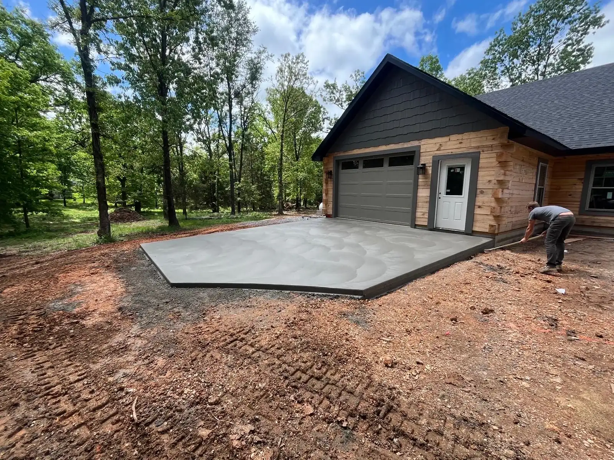
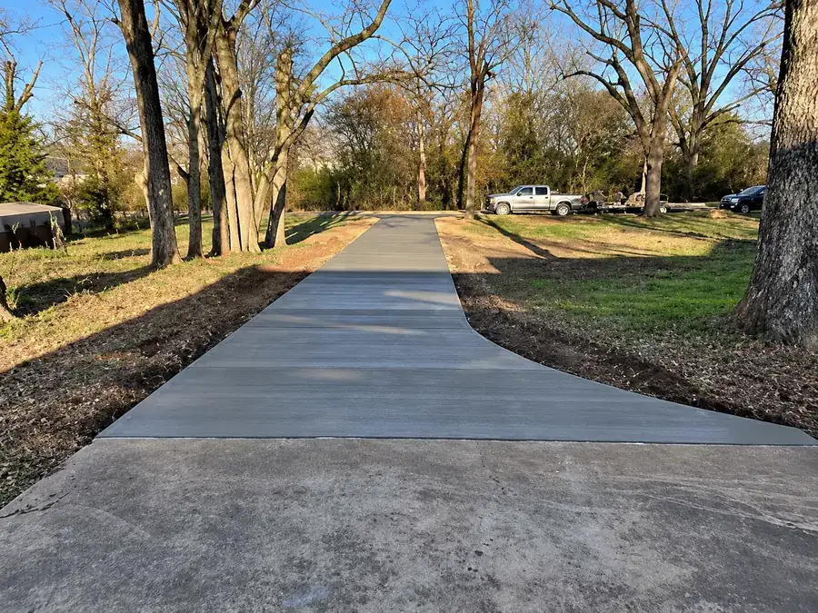
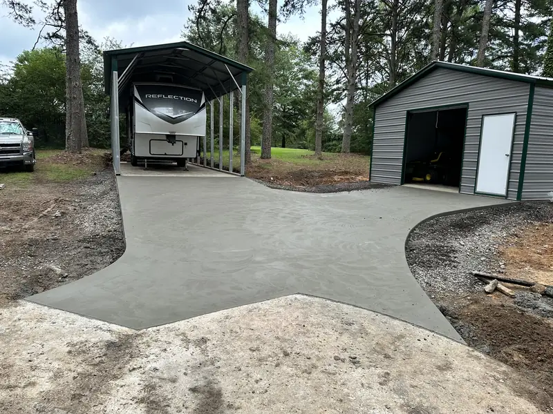
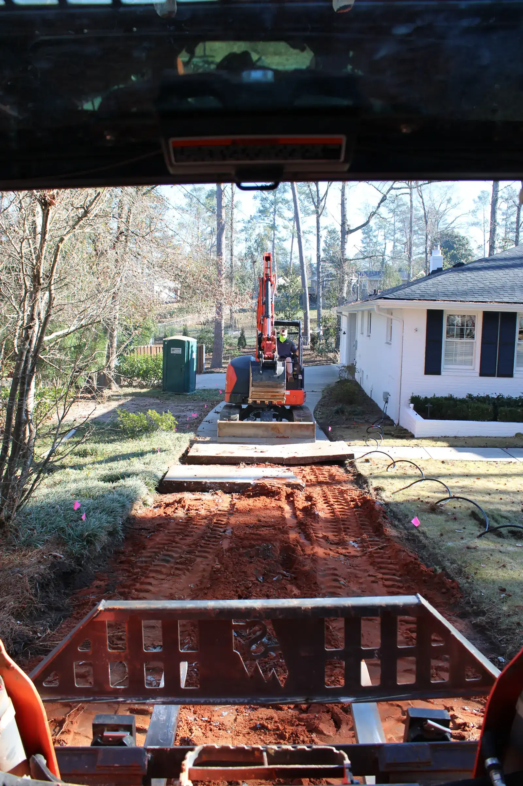
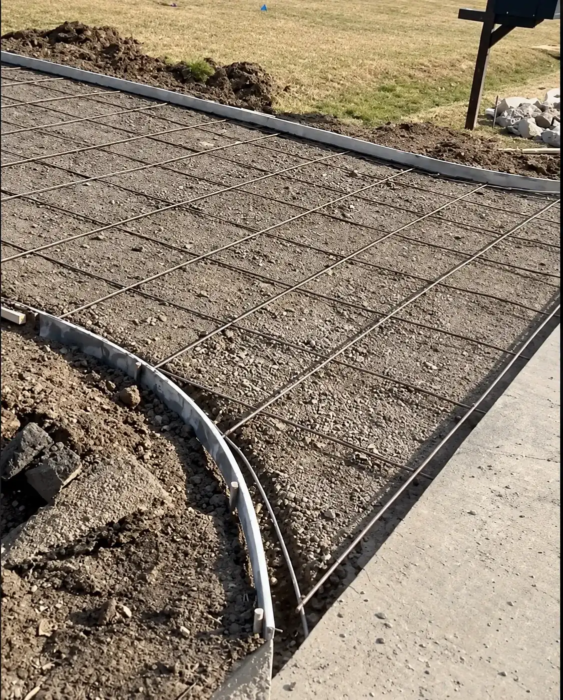
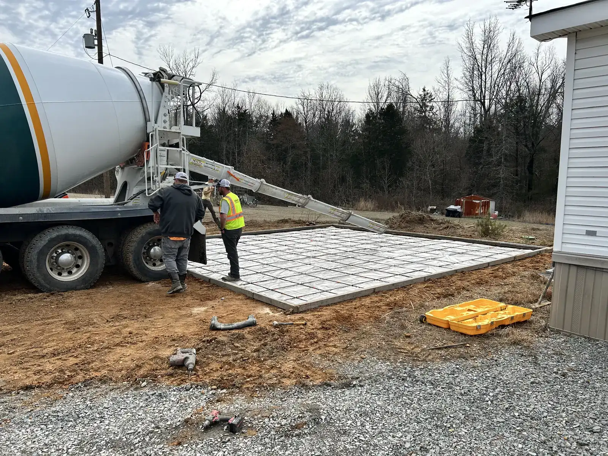
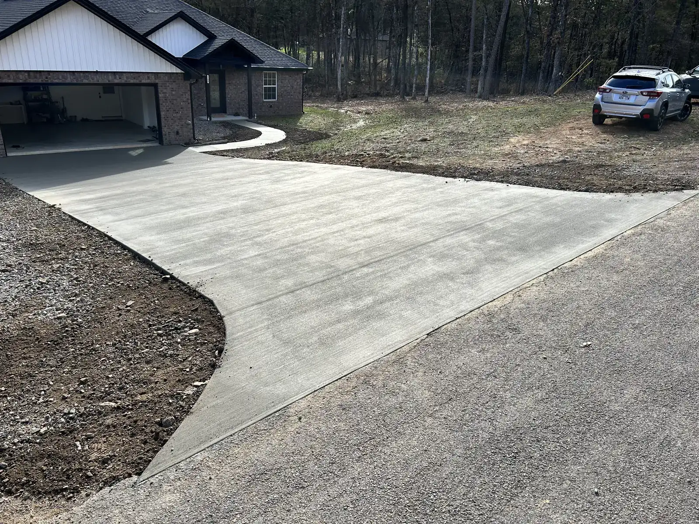
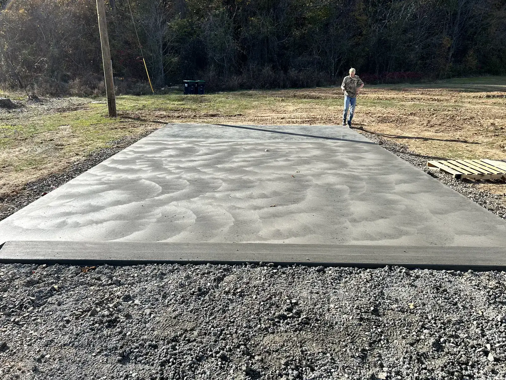
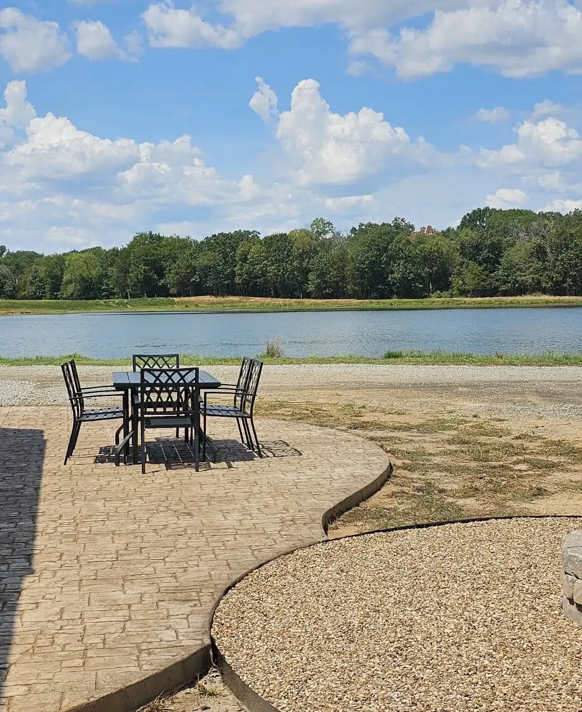

Concrete Driveways & Approaches in Gentry, Arkansas
New driveways, full replacements, extensions and street approaches for homeowners in Gentry, Siloam Springs and across Northwest Arkansas. Licensed and insured, with Logan on every pour from layout to cleanup.
Driveway work we handle
A driveway takes more abuse than any other slab on your property. It carries weight every day, freezes and thaws every winter, and it's the first thing people see. These are the driveway jobs we pour.
New driveways
For new builds and homes that have lived on gravel. Laid out, graded and poured to carry daily traffic and send water away from the house.
Full replacements
When an old slab or asphalt drive is past saving, we tear it out and pour new. We don't patch or resurface. A replacement is a new driveway built from the base up.
Widening & extensions
A second lane so nobody parks in the grass, a turnaround so you're not backing onto the road, or a parking pad for a camper, boat or trailer.
Street approaches
The section between the road and your driveway. Poured to the width, thickness and slope your city or county requires, with a driveway or on its own.
What a finished driveway looks like
Residential driveway and approach work, from long rural drives to garage pads and street tie-ins. Tap a photo to see it larger. Caliber's own jobs are written up on the Completed Jobs page as they're finished.


How we build a driveway
Most of what makes a driveway last happens before the concrete truck shows up. Here's the order we work in and why each step matters to you.

Removal and excavation
Old concrete, asphalt or gravel comes out, along with the topsoil and any soft material under it. Then the subgrade is cut to the right depth and pitched so the finished driveway drains away from the house and off the slab instead of pooling against the garage. On a sloped lot that might mean a slight crown or cross-pitch. On a flat lot it means making sure the water has somewhere to go.

Base, forms, drainage and reinforcement
A gravel base goes in and gets packed tight with a plate compactor. This is the single biggest difference between a driveway that stays flat for decades and one that starts settling in year two, and it's invisible once the concrete is down, which is why some contractors skip it. Forms are set to the finished height and checked for straight lines and proper fall, so the drainage is built into the slab. Then the steel goes in: a standard residential driveway is poured four inches thick and reinforced with a rebar grid set on chairs so it sits in the middle of the slab, not on the ground where it does nothing. If a heavy truck, trailer or RV will sit on part of it, tell Logan at the estimate. That section gets a thicker pour and heavier steel, which is cheap before the pour and impossible after. The approach, which takes the sharpest turning loads, is built to whatever your city or county requires.

Pour and finish
Concrete is placed, screeded level with the forms, floated, and finished. Logan is on the slab for this part, not watching from the truck. Driveways get a broom finish by default: it gives tires and shoes traction when the surface is wet or icy, hides minor marks, and looks clean. If you want a stamped border or integral color to tie the driveway to the house, that's decided before the pour, not after.

Joints, curing and cleanup
Concrete shrinks slightly as it cures and will crack somewhere. Control joints are straight, planned grooves cut to the right depth and spacing so those cracks happen out of sight. Once the finish is on, the slab needs time. Forms come off, edges get backfilled, mud comes off the street, and the yard is put back the way we found it. You get plain instructions on when to walk on it and when to park on it.
How the surface can look
Three finishes cover almost every driveway. Each changes how the surface looks, how it grips, and how you look after it. A driveway is never troweled slick, because a smooth surface is dangerous when it's wet or icy.
Broom finish
The standard for driveways. A light, even texture dragged across the surface for traction when it's wet or icy. Hides minor imperfections and cleans up with a hose or pressure washer.

Fuzzy finish
A power-trowel finish stopped early. The trowel runs over the slab but comes off before the surface is slicked smooth, leaving a fine, even texture. Cleaner and more uniform looking than a broom finish, with grip left in it, and a good fit next to a smooth garage floor.

Stamped or colored
A stamped border, a band across the top of the drive, or integral color through the whole slab to match the house. Takes more time and material than a broom finish. See stamped & decorative.
What to expect from first call to first drive
Scheduling
Logan can usually start within about a week of the estimate, weather allowing. Concrete doesn't get poured in the rain or below freezing, so a wet week can move the date. You'll always hear about it before, not after.
On the job
Most residential driveways are a two-to-three-day job: a day for excavation, base and forms, a day for the pour, and a visit back to cut joints and pull forms. The day before the pour, we'll confirm where to park, because you won't be driving into the garage for a bit.
After the pour
Walk on it after a day or two. Keep vehicles off for about seven days. The site is cleaned up when we leave: forms pulled, edges backfilled, street swept, nothing left in the yard.
Why homeowners call Caliber for a driveway
Licensed and insured
Caliber Concrete LLC is a licensed and insured concrete contractor in Arkansas. If something goes wrong on your property, you're covered, and so is the person doing the work.
The owner pours it
No crew you've never met. The person who gave you the estimate is the person forming, pouring and finishing your driveway, and the one who answers the phone afterward.
Warranty option
Go with the base prep Logan recommends and he'll stand behind the work with a warranty. Ask him to walk you through the terms when he gives you the estimate.
How thick should a residential concrete driveway be?
Four inches is the standard for cars and pickups. If you park a heavy truck, trailer or RV on it, tell Logan at the estimate and that section gets poured thicker with heavier reinforcement.
How long before I can drive on a new driveway?
Plan on keeping vehicles off it for about seven days. You can walk on it after a day or two. Concrete keeps gaining strength for weeks, so the longer you wait, the better it treats you.
Will my new driveway crack?
All concrete shrinks slightly as it cures and moves a little with the ground. Good base prep and properly spaced control joints make that cracking happen inside the joints where you never see it. Random cracks across a driveway almost always trace back to skipped prep or joints that were too shallow or too far apart.
Can you widen or extend my existing driveway?
Yes. Widening, turnarounds and parking pads are common jobs. We match the height and pitch of your existing slab and tie the new section in so it doesn't become a trip edge or a water trap.
Do you replace old driveways?
Yes, as a full tear-out and new pour. We don't patch, resurface or repair existing concrete, because a patch on a failed base fails again. A replacement is built from the base up like a new driveway.
Do I need a permit for a driveway approach?
It depends on the city or county. Many have rules about approach width, thickness and slope where it meets the road. Logan checks what applies to your address and pours the approach to that spec.
Get a free driveway estimate
Takes about a minute. Logan will call to talk it through before he comes out to measure.
Where we pour driveways
Caliber Concrete is based in Gentry and pours driveways and approaches across the Arkansas side of Northwest Arkansas:
- Gentry, Siloam Springs and the rest of western Benton County
- Bentonville, Centerton and Rogers
- Springdale and Fayetteville
Not sure if you're inside the line? See the service-area map or just call. Related work: sidewalks and walkways that tie into the drive, patios, and stamped and decorative borders.
Ready to pour?
Call, text, or send the quick form. You'll hear back from Logan, not a call center.